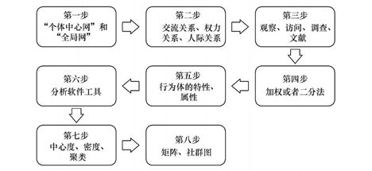
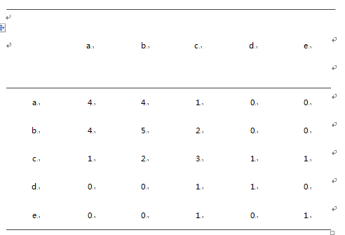
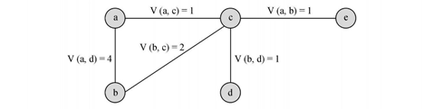
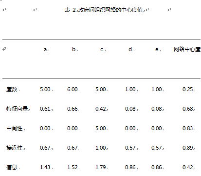
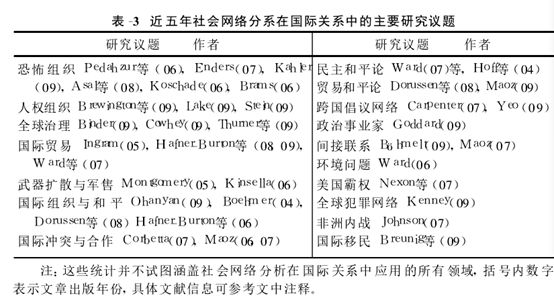

收录于合集
简
刘 丰
南开大学周恩来政府管理学院副教授。
陈 冲
南开大学周恩来政府管理学院国际关系学系2006级本科生。
★
内容提要： “网络 ”在国际关系研究中占有重要的地位,但一直缺乏系统的经验性研究。近年来兴起的社会网络分析方法很好地填补了这一不足。社会网络分析方法采取结构分析路径,反对 “类别分析 ”,着眼于行为体间的 “位置及其相对关系”。它不仅在方法上 ,而且也在理论上突破了传统的研究范式 ,逐渐成为国际关系研究中一个新的热点议题。本文主要介绍了社会网络分析的基本概念、分析框架、主要的研究方法以及近几年在国际关系研究中的应用,并对其贡献和存在的不足进行了简要的评析。
关键词： 网络 社会网络分析 国际关系
★
长期以来,“网络 ”作为一个熟悉的概念在国际政治研究中一直被广泛使用。 在国际关系中,网络通常被视为一种促进集体行动与合作、施加影响以及作为国际治理方式的组织模式。 这些网络中 ,既有凯克 (MargaretKeck)和辛金克(KathrySikkink)描述的跨国倡议网络这样的 “友善 ”网络 , 也有自 “ 9· 11”以来受到特别关注的恐怖分子组成的 “黑暗网络 ” , 还包括像基欧汉(RobertKeohane)和奈(JosephNye)描述的 跨国治理网络 等等。 总体而言 ,我们可以将社会互动,特别是国际互动构想成为一系列的网络关系 , 这样 “国际关系就成了关于网络的关系 ”。与基欧汉和奈一样 ,许多国际关系学者都使用 “社会网络 ”或者国际网络这一术语来讨论国际现象 ,然而在很长的一段时期内, 他们却没有认识到存在着一种科学的方法来研究这些 “网络”。与此相对 , “网络分析”的研究路径被广泛应用于传染病、物理、数学、生物以及计算机科学等自然科学领域 ,而这些领域表面上似乎与国际关系研究并无关联 , 因此国际关系学者们也找不到明显的理由去相信 “网络分析 ”同样可以应用于国际关系研究之中。
在国际关系领域
早期的探索者考察了国际体系中的 “新兴结构 ”———基于贸易、政府间组织成员以及外事交流所自然形成的网络联系。
第二个时期开始于 70 年代晚期的社会学研究中 , 它们从依附论和世界体系论出发 , 研究决定国际不平等的结构因素。 1978年, 国际网络分析网组织宣告成立, 这标志着网络分析范式的正式诞生 。然而这些研究并没有在国际关系领域寻觅到 “知音 ”,因为它们的理论视角偏离了主流政治学的研究领域。
直到 20世纪 90年代, 在网络分析应用的第三次潮流中 ,网络分析工具与国际关系的核心问题才整合到一起。 具有讽刺意味的事, 到 2000年以前,应用社会网络分析方法研究国际体系的学者, 绝大多数都是社会学家而不是政治学家。
最近几年来,越来越多的政治学家开始应用社会网络分析方法研究国际问题。但是,正如此前国际关系领域的任何新颖范式一样, 国际网络的研究也受到了许多的怀疑。
人们使用 “网络”这个行话 ,但却没有领会其要义。一些学者并没有理解社会网络分析的方法与系统研究国际结构和过程之间的关联性。另一些学者可能明白社会网络分析的某些方面 ,但却将其局限为一种方法论或者测量关系的方式。 但社会网络分析并不仅限于方法论。它是一种对社会过程的全面看法:它将这些过程视为人、群体、机构以及国家间形成的一种关系系统的“新兴结构”;它从个体间出于自愿联系 (由于个体的选择)或者非自愿联系 (例如个体间地理位置的邻近或者共有的文化属性)产生的关系结构来研究社会过程和结构。 许多这样的 “新兴结构 ”要么是无意识的 ,要么是不可见的。社会网络分析提供了许多概念、方法以及统计和数学工具来系统地研究这些结构。 社会网络分析补充了传统的注重于行为体属性和静态平衡的结构研究路径 ,它强调了物质和社会关系是如何通过动态的过程产生行为体间的结构 ;它提供了测量这些结构的方法 ,为分析国际关系的核心概念 (如权力)等开拓了新的道路。 简言之,社会网络分析是一种科学研究社会互动的新路径。因为国际关系就是关于国家间以及国家与非国家行为体间的互动, 社会网络分析完全适合国际关系的研究。
本文的主要目的是介绍社会网络分析方法的分析框架以及近年来在国际关系研究中的广泛应用。因此, 本文拟对如下问题进行探讨:什么是社会网络分析? 如何从社会网络分析视角研究国际关系 ? 它的研究现状如何? 作为新的研究路径 ,社会网络分析对国际关系研究有何贡献和不足 ? 本文第一部分将概述社会网络分析的相关概念及其特点 ,第二部分探讨其研究方法和步骤 ,第三部分介绍近年来社会网络分析在国际关系研究中的主要成果,最后将总结社会网络分析对国际关系研究的主要贡献以及仍待突破的问题。
社会网络与网络分析
从最简单的形式定义 ,网络就是一些相互联系的点组成的集合。它是一种对行为体(点 )间关系的结构性表示, 至于 “谁”是这个网络中的 行为体 ,则取决于研究者的兴趣 , 它可能是个人或者群体, 也可能是组织或者国家。 这些 “联系 ”包括人际关系、贸易关系以及外交关系等, 它们定义了行为体是否、如何以及在多大程度上联系在一起。 作为一种“持续的互动模式 ”,网络界定了国内政治和国际政治的过程。在国内政治中,行为体在一定的群体网络中互动 ,并保持与政党、利益集团以及官僚组织机构的联系。 尽管国际政治通常被描述为“无政府 ”状态,但国家以及非国家行为体间的关系模式表明, 在国际政治中同样存在这种网络结构 ,无论是暂时性的同盟关系, 还是像欧盟这样更制度化的国际组织。
社会网络分析主要区分两种类型的网络 :关系网络和隶属网络。关系网络也称单模网络,在这种网络中, 那些定义它们的规则描述了任意两个单位之间存在或缺失、有向或无向以及重要程度的关系。 例如 ,邻居、朋友、同盟和贸易网络就是关系网络 。隶属网络也称为双模网络 ,是那些以一个事件、组织或者群体来定义一个单位的隶属组织。 专业组织的会员、社会俱乐部成员, 国际组织中的国家都反映了隶属网络。关系网络可以是对称的, 也可以是非对称的(在一个方向上比另一个方向强烈, 经常发生在国际贸易中)。
社会网络分析采取结构分析路径。它的核心着眼点是行为体 (或点 )的“位置及其相互关系”。 因此,根据分析的着眼点不同, 社会网络分析可以分为两种基本视角: 关系取向和位置取向 。关系取向关注行为体之间的社会性粘着关系, 通过社会联结本身 ———如密度、强度、对称性、规模等———来说明特定的行为和过程。位置取向则关注存在于行动者之间的、且在结构上相处于相等地位的社会关系的模式化,它讨论的是两个或以上的行为体和第三方之间的关系所折射出来的社会结构, 强调用 “结构等效 ”来理解行为体行为。值得注意的是 ,社会网络分析并不纯粹是一种“方法导向”的新研究路径, 它在理论上也有重大的贡献。正如建构主义和理性选择理论一样, 社网络分析并不是一个单一理论 , 而是一些分享基本假设的理论集合, 与前者不同的是它反对 “类别分析 ”。类别理论以行为体属性来解释社会过程, 例如理性选择理论关注行为体的利益和权力,建构主义者将行为体的认同、规范或者意识形态作为社会行为的微观基础。 “反类别之诫令”(anti- categoricalimperative)是社会网络分析的基本出发点 ,它“反对仅以行为体 (无论是个体还是集体)的类别属性来解释人类行为或社会过程”。它提出 “社会关系是社会过程的基石”,它的解释力建立在“关系模式”上, 它关注的是行为体间的关系属性, 而不是其本身的属性 , 诸如利益、权力或者意识形态等 ,从而为国际政治研究提供了新的理论视角。
在国际政治的研究中 ,主要有两种网络分析路径。 第一种是将 “网络作为结构”来研究 ,即网络结构对网络成员的影响以及由此产生的网络效应。第二种关注于作为行为体的网络,网络作为与市场和等级组织相对应的具体组织形式。 作为行为体 ,这些网络同样对国际结果有显著影响。国际网络的结构研究取向认为 ,关系结构或者自然属性将系统地影响网络成员的行为并产生可认同的结果。这些行为体 (点 )间的联系产生了一种结构 ———“持久的关系模式 ”,这种结构又反过来限制行为体行为或者为其行为提供机会。 例如, 哈夫纳伯顿 (Hafner- Burton)和蒙哥马利 (Montgomery)发现政府间组织网络对国家间的冲突行为具有显著性的影响;保罗 · 英格拉姆(PaulIngram)、杰弗里 ·罗宾逊 (JefreyRobinson)等认为 IGOs网络对贸易流动具有明显的影响 ,甚至当 IGOs并不是致力于降低贸易壁垒时情况也是如此。 金正铉(KimJangHyun)和乔治·巴内特(GeorgeA.Barnet)从国际结构(网络)入手, 发现自由主义与现实主义 (包括亨廷顿的 “文明冲突论”)关于国际冲突的预测并不理想和有效 ,而应该采取一种新的结构分析方法。 第二种在国际政治中较为熟悉的网络分析取向就是将网络视为行为体 —— 一种协调的形式和旨在改变国际结果和国家政策的集体行为。 网络并不是社会生活中无处不在的特征, 相反它们是具体的制度形式 ,并与国家的等级组织和市场中临时有限的交易关系相对立。在乔尔 · 波多尔尼 (JoelM. Podolny)和卡伦 ·佩奇(KarenL.Page)广为引用的定义中, 一个网络是 “任何追求与另一方重复、持久的交易关系, 同时缺乏一个权威性的组织来仲裁和解决在交易中可能出现争端的集体行为体 (N大于等于 2)”。与市场相比, 网络关系是持久的;与等级组织相比,被认可的解决争端的权威并不 “站”在网络中的任何一方。这种将网络作为行为体的研究取向与结构取向的研究不同。对前者的兴趣来说,结构(在网络存在之外)很少处于中心位置。相反, 当其与制度性的竞争者对比时,网络组织的相对优势和劣势占据了更突出的位置。这些网络行为体(“点”)可能是政府机构、人权活动家, 恐怖组织或者其他国际行为体。例如 ,奥古斯特 (AugustHämmerli)等利用事件分析数据从网络行为体分析的角度来认定车臣战争中的主要行为体以及它们间冲突与合作的联系。他们将 2002年至 2005年所报到的2818件事件中的行为体分为 44种 ,发现三种最主要的行为体,依次是平民、俄罗斯军队和车臣恐怖分子 ,进而为这一问题研究的提供了新的关系数据。
网络分析的结构取向 ,从点的特征中抽象出结构;尽管如此,对网络分析的行为体取向来说 ,能动者的特征可能改变其所在网络的目标和效率。网络作为行为体的研究取向目前仍缺乏一个像社会网络分析的共同方法论。它的经验研究方法是折衷的以及大量的定性研究。将网络认定为“网络 ”是关键的第一步 ;在此认定上, 评估它的组织优势和劣势。在实际研究中, 这两种路径通常难以截然分开 ,两者 “你中有我、我中有你”的局面往往使网络研究既全面深入又错综复杂。区分这两种研究网络政治的路径和它们特定的分析和解释目标减少了经常萦绕国际关系研究的困惑。网络分析允许在多层次分析上的结构研究 ,包括任何规模的群体单位, 以及国家、双边以及体系层次上的分析。
社会网络分析的主要方法
社会网络分析的目标旨在认定社会结构的关系模式 , 例如, 轴心、派系、聚类或者经纪人等, 并将这些关系与利益关系联系起来。根据瓦瑟曼(Wasserman)和福斯特(Faust)的描述, 网络分析包括如下基本假设：
(1)行为体是相互依存而非独立的单元;
(2)行为体间的“联系 ”是资源 (物质的或非物质的)传递的渠道 ;
(3)网络模型关注个体如何看待为个体行为提供机会或者限制其行为的网络结构环境 ;
(4)网络模型将 (社会、经济、政治等 )结构抽象为一种行为体间的持久的关系模式。
在确定研究问题之后, 进行社会网络分析里可以遵循如下步骤:第一, 决定分析网络的类型 ;第二 ,用相关的理论方法定义这个网络中的关系 ;第三 ,收集网络数据;第四 ,测量这些关系;第五 ,决定是否包含行为体的属性信息 ;第六 ,分析网络数据 ;第七,产生描述性推论 ;第八 ,表示这些网络数据。 (见图 -1)

图-1 进行社会网络分析的步骤
下面我们以国际关系中最常见的一种网络 ———政府间国际组织———来具体说明如何应用社会网络分析方法进行国际关系的研究。
在哈夫纳伯顿和蒙哥马利的研究中,为了说明他们的研究方法 , 他们假设存在五个国家 (a, b, c, d, e),分别是七个政府间国际组织的成员。因此, 我们的第一步就是要区分这个网络的类型 ,它是 “全局网 ”还是 “个体中心网 ”。 从网络分析的观点看 , 整个社会就是一张大网,是由网络组成的网络。前者的研究对象可能是整个国际社会乃至国际体系 ,而后者仅是以某一具体网络为中心。因此它属于由七个政府间国际组织组成的“个体中心网 ”。即使是同一网络也可能存在不同的关系 ,在由这五个国家联系成政府间国际组织网络中可能存在着贸易关系、同盟关系甚至敌对关系,在哈夫纳伯顿等人的研究中, 他们重点关注这些国家在网络组织中的位置所产生的权力关系, 因此 ,这就是研究的第二步。

社会计量矩阵(S)

社会网络分析中 , 第三步是收集网络关系数据。我们可以有多种渠道获得这些数据,如国际组织的会议文献、记录等。 这些数据是多元的 , 既有经济的 ,也有政治的以及社会的。 第四步就是测量我们得到的关系数据 , 这些数据可以用二分法 (binary)方式 (简单的以 “ 1”或 “0”等表示 ), 也可以用加权值(valued)的方式。在表 -1中, 我们采取前一种方式 ,以 “1”表示该国家属于某个组织, “0”则相反 ;这样我们就初步得到了四个国家加入的国际组织的情况 ,用矩阵 D表示。然后再将 D乘以其对角线值, 将其转化为最为常用的社会计量矩阵(socialmatrix)S,以此表示这个政府间国际组织成员网络。例如,在 S中, a 和 b之间的值为 4,表示 a与 b共同属于 4个组织, 它们之间的联系标记为 4。S为我们描绘了四个国家(点)在这个政府间组织网络中的分布情况。我们也可以用图-1直观的表示这种分布情况。

图-2 一个政府间国际组织网络例子
我们同样可以在 第五步中选择是否包含行为体的属性信息,如国家的经济社会情况,国家的政治(政体)、军事信息等。 由于在结构化的研究取向中, 社会网络分析重点关注的是行为体之间的关系数据,这个步骤是可选择性的。 第六步是对得到的网络数据进行分析,这一步我们可以利用电脑技术模型, 现在存在许多优秀的社会网络分析软件,可以大大简化我们的研究工作。 事实上,由于社会网络分析涉及到巨大的关系数据,对数据的分析几乎完全依靠这些软件分析。
社会网络分析为我们提供了一系列的描述网络属性的概念 ,例如中心度、密度、中间性、接近性、派系、聚类等。这些属性可以用社群图或者矩阵的形式表示(见表-2)。这就是我们进行社会网络分析的最后两步。上述网络中各个点的分布表明了两个重要的特征:点在网络中的中心度或者重要性以及网络分化成的子群。测量中心度的变量包括度数、接近性和中间性。一个点的度数是该网络中该点与其他点之间联系值之和。这个变量表明了一个点与另一个点的联系有多少渠道。中间中心度测量的是行动者对资源的控制程度 ,如果一个点处于许多其他点对的测地线 (最短的途径 ), 则该点具有较高的中间中心度 ,在此意义上它起到沟通它者的桥梁作用。接近中心度是以网络中一个点与其他点之间的路径长度来计算的,它测量的是信息和资源传播到网络中某个特定点的时间。

社会网络分析在国际关系研究中的应用
网络中的联系同样可以将一个网络分隔为许多子网络 (这也是 —种主要的网络分析方法 )。如果两个点的直接联系足够紧密或者它们与其他点相似(即结构性相似的聚类 ),那么它们就属于同一组 。在众多的紧密性和结构相似性的概念中,两种主要的概念是紧密度 (也称派系)和相似性 (也称结构对等性 )。一个派系就是一个群体中每个成员都有与其他成员存在超过一定最低限度点的联系力度。在派系中, 任何一对点都由一条线直接相连 ,并且该派系不被其他任何派系所包含。例如在图-2中, a, b, c属于一个 1-派系 , 因为它们相互之间都包含 1或者更多的力度, 因此 a和 b则属于 4-派系。一个结构对等的聚类则是在网络中每一个成员与其他点都有相同的力度。然而在现实中, 很难找到这样的数据 ,因此以结构相似性来表示结构对等性。在图 -1中 , e与 d就是结构对等的 ,因为它们仅与另一点 c具有相同的力度。在将网络划分为结构相同的派系后,这个网络就可以用块模型方式来研究各种群体间的直接关系 ,进而研究其宏观结构。
作为一种研究关系结构的路径 ,社会网络分析为我们描述、分析和评估各种不同单位 (人、组织和国家 )间的关系结构提供了有力工具。这些关系可能存在于单一层次的网络中 ,也可能存在于不同层次的网络中。这个 “工具箱 ” 包括几个重要的 “隔间 ”:它为我们提供了一系列描述性方法, 使得我们可以用一种系统的方式总结复杂的关系;分析这些结构的影响, 评估无法观测的或者不易可见的关系 ;提供许多将网络
分化为子网络并进而研究其属性的策略;处理多层次网络(体系 ,次体系,双边,国家层次)的方法。近年来,社会网络分析在国际关系的研究中受到了广泛的关注,形成了网络分析研究的“第三次浪潮”。

从表-3可以看出近年来 ,社会网络分析被广泛应用于军控和裁军、武装冲突和争端解决、非传统安全、全球化及治理、国际贸易、全球气候变化等几乎涵盖国际问题研究的所有 “新老”议题,涉及国际安全、对外政策、国际关系理论、国际政治经济学等领域。
第一,传统的安全领域。 国际冲突与合作是国际关系研究中最重要的议题之一 ,国际冲突缘起与争端的解决, 国际和平的条件等都是社会网络分析关注的重点。例如 ,许多学者以社会网络分析方法研究政府间组织成员对于国家间冲突与和平的影响。哈夫纳伯顿和蒙哥马利检验了同属政府间国际组织网络的国家形成的集团 (聚类 )以及它们的威望对于国际冲突的影响。他们发现在政府间国际组织网络内 ,同一个聚类的国家以及那些在它们网络中有着较高威望的国家之间 ,冲突相对较少。这里社会网络分析被用来测量包括个体属性(以中心度衡量的威望 )、双边属性 (从内部组织衍生而来的, 在结构对等的聚类中的共同成员 )以及内部群体的特征(聚类的大小 )。
第二,国际恐怖主义和非传统安全领域。 “ 9· 11”事件以后 ,西方各国 , 特别是美国突然面对恐怖主义巨大阴影 ,针对这种威胁以美国、英国为中心的西方国际关系学者做了大量的分析。恐怖主义组织作为一种“黑暗网络”,受到了社会网络分析的广泛关注 , 产生了一大批成果。例如 , 沃尔特 ·恩德斯(WalterEnders)和苏学娟 (SuXuejuan)将理性选择模型和社会网络分析结合起来, 研究恐怖网络的最佳结构以及政府试图摧毁这些网络的最佳策略。他们发现当恐怖组织面临通信效率的最大化与被发现可能的最小化选择时 ,存在一个 “权衡 ”,即理性选择过程。这个模型然后被用来预测恐怖网络的结构以及在这种结构下恐怖袭击成功的几率。同样勃拉姆斯(BramsMutlu)等尝试去解释“ 9· 11”恐怖袭击网络的等级结构以及 “后 9· 11”时代的恐怖网络结构。他们使用了 “影响假设 ”这一概念 , 即那些具有更多网络联系的重要人物影响那些具有较少联系的人物。
第三,全球治理领域。 作为一个新兴的研究议题全球治理受到广泛的关注,从人权、国际移民到气候变化、互联网管理等领域 , 社会网络分析区别于传统的研究视角 ———强调政府间的合作。在它的分析框架下, 政府并没有 “丧失 ”其传统的角色 ,但是它可以选择授权给网络, 与其讨价还价或者合作, 也可以在世界政治的关键领域 “削弱 ”网络的作用。在卡勒(MilesKahler)今年主编的《网络政治》一书中 ,作者们围绕“网络治理”探讨了互联网治理、国际人权组织的责任、恐怖组织网络、国际有组织犯罪网络等全球问题。近年来国际移民问题受到了越来越多的关注 ,但是对它的研究却大多属于单向流动或者只是关注发达国家和地区的移民问题,而且一个重要的假设 ——— “自由”、“民主 ”吸引移民却没有得到很好的检验。克雷斯汀 (ChristianBreunig)和曹迅利用社会网络分析建立了一个 “普适双线性混效模型 ”,很好地弥补了这些既有缺陷 ,他们的分析涵盖了世界上所有地区的双向移民问题。 再如沃德用国家在环境网络中的中心度作为测量方式 ,检验了国家间的相对位置对于环境可持续性的影响。他发现,财富(人均 GDP)、人口和民主化程度受该网络中心度的影响。在全球化的浪潮中, 跨国活动频繁, 许多突出的国际问题都可以从社会网络的视角加以分析。
第四,国际政治经济领域。 社会网络分析还有一个重要的应用领域就是国际政治经济学领域。从表 -3 中可以看到它在国际贸易、经济相互依赖等领域广应用。在社会网络中 , “贸易”作为一种主要的关系网络, 特别适合以社会网络分析的视角进行研究。这一方面是因为贸易数据是目前最易获得 ,也是最完整和全面的数据;另一个原因是它在当今国际关系中的重要位置。这方面取得了许多的研究 ,特别是经济相互依赖与国际冲突方面的研究备受关注。例如 ,韩 ·多纳森等对作为 “间接联系 ”的贸易对影响和平的条件进行了检验。他们认为机会成本在其中的作用是最重要的, 因为那些机会成本大的商品对冲突的影响也更大 ,同时如果第三方也加入到该贸易网中 ,机会成本无疑会增加 , 因此社会网络分析特别适合评估贸易机会成本的间接影响。①再如哈夫 ·伯顿等以社会网络分析的视角检验了不断增加的国际贸易制度是否以及如何影响了一种特殊形式的冲突 ———经济制裁。他们的分析验证了自由主义和现实主义以及社会网络三种视角关于优惠贸易协定能否增加经济制裁的观点。他们发现自由主义关于 PTAs成员间联系减少了相互制裁并没有统计上的显著性 ,而现实主义关于 PTAs成员经济权力的增加和社会网络理论关于社会威望增加会使得经济制裁更有可能的观点得到了验证。
从上文的论述中 ,我们看到了社会网络分析方法近年来在国际关系研究中的广泛应用 ,为我们提供了新的视角和方法。简言之 ,这些研究阐明了社会网络分析在研究国际关系中的相关性和广阔前景 ,同时也阐明了这些研究中尚存在缺失的部分。 首先 ,大多数的研究中,网络属性和网络结构都是作为自变量。 尽管网络分析在检验国家和双边行为诸如冲突与合作, 环境可持续发展中十分有用, 但我们对于这些网络是如何形成,如何变化的还有待进一步认知。 第二 , 这些研究大多数集中于一个或者几个网络 ,它们研究各个网络对一些外部行为的影响 , 但是仍缺少的是对于这些网络间关系的更好理解。 第三 ,大多数研究要么集中于国家层次上,要么集中于双边层次 ,属于一个单一层次的分析, 还缺乏对这些网络如何在多层次上影响行为体行为的理解。
**
**
结语：贡献和不足
社会网络分析提供了一种其他研究路径所不具有的分析复杂系统的方法。国际关系就是关于“关系 ”的研究 , 因此这种方法就特别适合研究国际关系学科内的一些核心领域。社会网络分析方法对于国际关系研究具有重要的贡献和意义。
第一,它是一种系统研究 “间接关系 ”及其影响的方法。 “间接关系 ”在国际关系中占有重要的地位。许多研究国际关系冲突与合作的重要概念 ,都明示或者隐含地使用到了行为体(单元)间的间接关系。 “朋友的朋友是朋友”、“敌人的敌人是朋友 ”、“朋友的敌人是敌人”等现实主义的思维在国际安全政策上扮演了重要的作用,而这些都是 “间接联系 ”。例如许多研究对于国际 “相互依赖 ”关系的研究, 对于国际冲突的调停行为关注的都是“间接”关系 ,而非直接联系。只是 ,在目前对于这种关系的经验研究并不是很多 ,特别是在何时、何种条件下“间接关系”在世界政治扮演重要的角色还有待研究。社会网络分析方法为我们提供了一个独特的视角来系统地研究这些问题。
第二,它是跨层次分析国际关系的桥梁。 分析层次的问题一直困扰着国际关系研究。这个问题的本质在于两方面:一是这个问题经常以定义国际关系的“分析单位”形式提出, 即行为体的行为是由国际体系的结构所致还是单位体的选择和行为聚集的结果。从另一方面来看, 分析层次既是一个方法论的问题也是一个理论问题:许多经验研究 ,特别是关注于国际冲突的原因和影响的研究揭示出一个经验层次上观测的结果与另一个经验层次上获得的结果之间的不一致性。 同样社会网络分析可以帮助我们解决这个问题。例如, 如果行为体的根源在于国际体系的结构 ,那么这种结构特征的性质就可以用国际网络的属性(极、密度、中心度等)来测量。这些属性然后可以用来预测单位体的行为和属性。同样,如果我们认为因果箭头是从行为体的属性和选择指向体系的结构 ,那么社会网络分析可以将体系结构视为一个 “新兴结构 ”, 然后用这些单位的属性来研究网络整体的属性和过程。 也就是说, 社会网络分析提供了一个跨层次分析的工具。
第三,它在一个框架下集合了属性、关系、结构等研究取向。 在国际关系研究中, 大多数研究都注意到行为体的属性(权力、政体、国家的文化特征 ), 也关注到关系(同盟、贸易、冲突、双边合作等 )。但将二者纳入统一的分析框架的经验研究却很少。充其量属性被用来预测关系。社会网络分析出于从经验和理论的目的 ,将二者整合到一个框架 ,然后基于二者联合的基础上 ,形成一种测量结构的方法。
第四,它是理论检验与创新的 “试验室”。 在大多数的情况下 , 社会网络分析在社会科学的应用包括用网络分析的概念和方法来检验社会心理学、社会学、组织行为学以及国际关系中的理论。那些关于社会互动的形式、结构、影响的理论就特别适合用社会网络分析的方法来检验。例如对民主和平论、贸易和平论以及结构洞、政治事业家、经纪人位置等的研究乃至关于社会资本等研究就属于这类型应用。
总之,社会网络分析为系统研究社会和国际互动提供了一系列重要的工具和视角。当然,以网络分析形式来思考国际关系并不排除其他的研究路径 ,基于社会网络分析的研究也并不意味着比其他的研究方法优越。
社会网络分析也存在一些局限和弱点：
例如缺乏一个动态的网络模型。 大多数社会科学方法包括社会网络分析的大多数成果都是单网络研究。研究者在一个特定的网络中收集数据 , 这些数据仅在一个特定地点和时间下 “记录 ”了这些关系的一些“掠影”。这个网络然后就在一个特定的理论背景下分析。这些数据反映了在特定时间和地点组成这个网络的结构、特征以及网络行为的影响。但在国际关系研究中最有趣的则是跟踪这些网络随着时间推移而产生的变化。
此外, 尽管社会网络分析中有许多包括单边、双边、三边关系、群体和全网的测量 ,这些对于国际关系的研究固然具有重要的影响, 但社会网络的这些概念并不是来源于政治学或者国际关系背景, 因此, 一些对于国际关系学者感兴趣的政治体系的关键特征和概念仍有待 “开发 ”。 这不仅仅是社会网络分析的问题, 也代表了许多借鉴、引进其他学科知识和方法的普遍问题 ,即范式间的“通约性 ”问题。
与此同时 ,社会网络分析方法过于复杂。 在现实中, 网络复杂多样, 因此网络分析对实际研究提出了许多的挑战 , 特别是关系数据的处理对于研究者来说是一个艰巨的任务;而且这种方法涉及到严密的数学、社会学、统计学等知识 ,对于国际关系领域的学者也是一个知识上的拓展 ,更何况获得全面的数据并非易事。
注：文章有删节，完整内容及参考文献可参看原文。
文章来源：《国际政治科学》2009年第4期
筛选：晞哲 编辑：诗夏 米金金